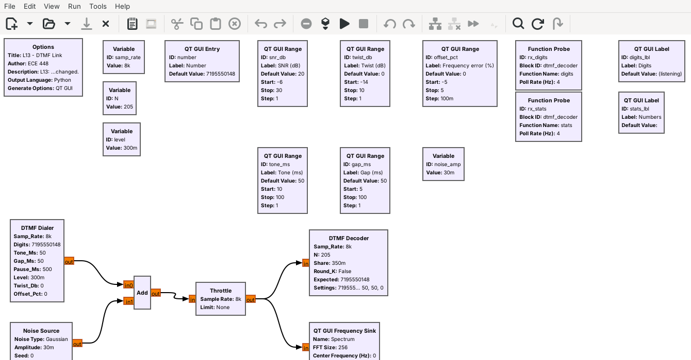
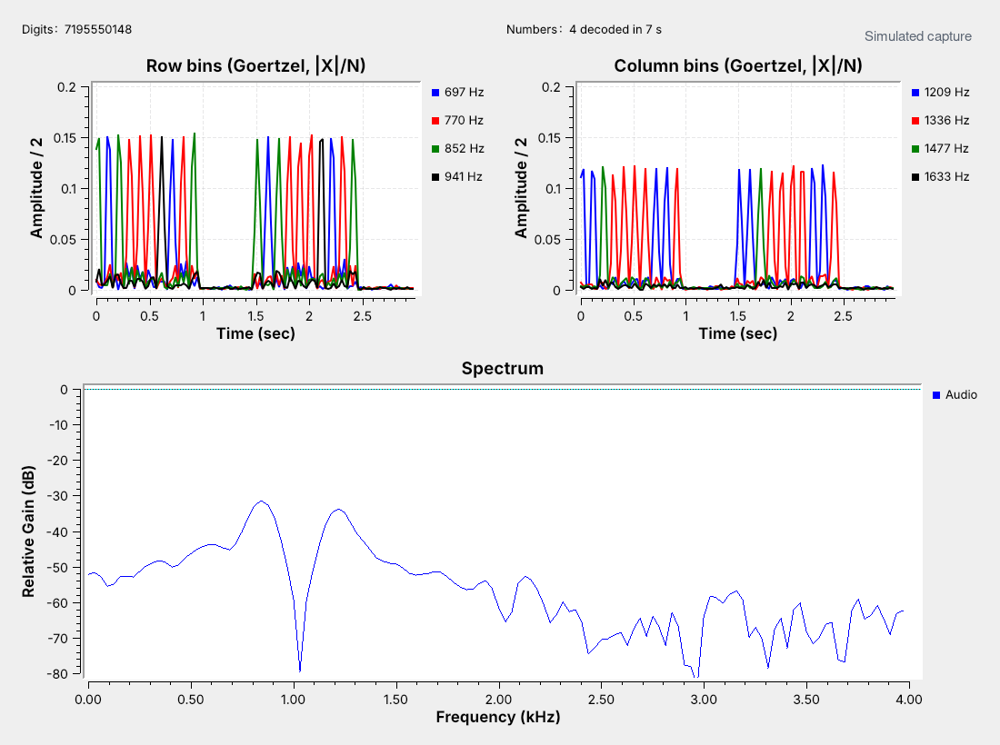

L13 Lab — DTMF#
DTMF
Build a DTMF keypad, decode a capture whose number you do not know, find where the decoder fails, and decode a real phone.
L13 Lab · Module 6: Waveform Applications & RF Reverse Engineering · Dr. Neil Rogers
Learning Objectives
- I can decode DTMF tones from a captured audio signal.
From Lesson to Bench
Pre-Lab: run the receiver, work out block settings, and add noise.
Bench: build the keypad and bins, decode a capture, find the limits, and decode a phone.
Writeup: explain where the decoder misses digits, and why.
Lesson 13 decoded a synthetic capture of a phone number. Today you build the keypad and the receiver’s eight Goertzel bins from an empty canvas, decode a second capture whose number you do not know, and measure where the decoder stops working as the twist, the tone length, and the block length change. Then you decode a real signal: a phone’s keypad through your laptop’s microphone. The lab packet has three parts, and you turn it in once, complete, before Lesson 14. You do Part 1, the Pre-Lab, on your own before the period, record Part 2’s measurements in class, and explain them in Part 3, the Writeup.
Nothing in this lab transmits. Bring a phone whose keypad plays tones, and headphones if you want to listen without disturbing the room.
Part 1: Before the Period
L13-dtmf-rx.grcdecodesL13-capture.wav.Look up the tones of a number of your own.
Work out the block times at N = 102 and 410.
Run
L13-dtmf-link.grcand lower the SNR until digits drop.
Do the Pre-Lab before you arrive. Put every file from the Lesson 13 and L13 Lab pages in one folder. Question 1 checks that the receiver opens, runs, and reads 7195550148 from L13-capture.wav; if GRC reports an error, the L5 lesson page lists the install checks.
Question 2 sets up the bench. Look up the two tones of each key in a number you choose, and work out the block time \(N/f_s\) and the bin spacing \(f_s/N\) at the two other block lengths Part 2 uses. Then open L13-dtmf-link.grc, lower the SNR slider a step at a time, and record where the Numbers label first shows a number missed or wrong.
Expected Numbers
Check |
Expected |
|---|---|
|
7195550148, every 1.5 s |
Key ‘9’ |
852 Hz and 1477 Hz |
Block at N = 205 |
25.6 ms, bins 39 Hz apart |
Repeated digits |
each one counts |
The receiver should decode every repetition of the lesson’s capture with no wrong digits. Your keypad should put two lines on the spectrum exactly at the grid’s frequencies, within the frequency sink’s resolution. The lab capture is harder than the lesson’s, with more noise, more twist, and shorter tones, but the decoder should still read every repetition the same way.
Part 2: Keypad Build
Start GRC and choose File, New, QT GUI. Do not open
L13-dtmf-keypad.grc; build it yourself.Set
samp_rateto 8000. Add a QT GUI Chooser with IDkey: type Integer, Num Options List, optionslist(range(16)), labels['1', '2', '3', 'A', '4', '5', '6', 'B', '7', '8', '9', 'C', '*', '0', '#', 'D'], widget Radio Buttons, orientation Horizontal.Add a QT GUI Push Button with ID
press: type Integer, pressed 1, released 0.Add Variables
row_f=[697, 770, 852, 941][key // 4]andcol_f=[1209, 1336, 1477, 1633][key % 4].Add two Signal Sources: type float, waveform Sine, amplitude 0.3, frequencies
row_fandcol_f. Add them with an Add block, then a Multiply Const with constantpress.Add a Rational Resampler (float, interpolation 6, decimation 1) and an Audio Sink at 48000.
On the Multiply Const output, add a QT GUI Frequency Sink (float, FFT size 2048, bandwidth
samp_rate) and a QT GUI Time Sink (float, 160 points). Do not add a Throttle; the Audio Sink sets the rate. Every arrow must be black.Run it. Hold Press on three keys of your choice and screenshot the spectrum for one, for Question 3(a). Read both peaks for each key for Question 3(b), and listen with the volume low.
Part 2: Receiver Bins
Keep your keypad flowgraph open. On the Multiply Const output, add eight Goertzel blocks, each with Rate
samp_rate, Length 205, and Frequency one of 697, 770, 852, 941, 1209, 1336, 1477, and 1633. Follow each with a Complex to Mag.Add two QT GUI Time Sinks: type float, 4 inputs, 117 points, sample rate
samp_rate/205, Y axis from 0 to 0.2, autoscale off, GUI Hints3,0,1,1and3,1,1,1. Connect the four row chains to one sink and the four column chains to the other.Open
L13-dtmf-rx.grcin a second tab. Copy its DTMF Decoder block, its two Function Probes, and its two QT GUI Labels, and paste them into your flowgraph. Set the labels’ GUI Hints to4,0,1,1and4,1,1,1, and connect the Multiply Const output to the DTMF Decoder. You build the bins; the supplied block makes the decisions.Run it. Hold Press on one key for about half a second, screenshot both time sinks, and read the peak heights for Question 3(c).
Press each key of your Question 2(a) number in turn. Each key appears in the Digits label about 0.2 s after you release it. Record the keys the decoder reports for Question 3(d).
Part 2: The Lab Capture
Open
L13-dtmf-rx.grc. Double-click the Variablewav, change its value to'L13-lab-capture.wav', with the quotes, and run it. The Wav File Source reads the file only when the flowgraph starts.Wait for the Numbers label to count at least five, and record the number in the Digits label for Question 4(a). Screenshot the window.
Read the height of the row peaks and of the column peaks in the two time sinks, and note which group arrives weaker, for Question 4(b).
Read the time from one dialing to the next in the time sinks, count the digits, and estimate the time per digit, tone plus gap, for Question 4(c).
Part 2: Decoder Limits

Open and run
L13-dtmf-link.grc. The Numbers label counts the dialings decoded correctly since a setting last changed, and the dialings that decoded at all; 0 of 0 means none decoded. Each dialing of the default number takes 1.5 s.Type
123A456B789C*0#Dinto Number and press Enter, so that the link tests every key. Set the twist to each value in the Question 5(a) table, wait about 30 s, and record the Numbers label.Set the twist back to 0 and the number back to
7195550148. Set Gap to 60 ms, set Tone to each value in Question 5(b), wait about 30 s at each, and record the Numbers label.Set Tone to 60 ms, set Gap to each value in Question 5(c), and record the Numbers label.
Part 2: Block Length
Stop the link flowgraph. Double-click the Variable
Nand change it from 205 to 102. Run it.Set Gap to 60 ms and Tone to 22, 25, and 30 ms. Then, with 50 ms tones and gaps, set the frequency error to +1.5%, +2.5%, and +3.5%. Record each Numbers label in the Question 6 table.
Stop it, set
Nto 410, and run it again. Record the Numbers label at the default 50 ms tones and gaps. Then set Tone and Gap to 100 ms and record it at frequency errors of +0.5% and +1.0%.Stop it and set
Nback to 205.
Part 2: A Real Phone

L13-dtmf-mic.grcis the receiver with the microphone in place of the WAV file.The figure shows the synthetic capture; your phone’s bins will look rougher.
L13-dtmf-mic.grc takes the laptop’s microphone at 48 kHz, lowers the rate by 6 to 8 kHz with a Rational Resampler, and runs the same eight Goertzel bins and DTMF Decoder as the receiver. It is compiled only and not yet tested with a real microphone, so expect to adjust it. Most phones play DTMF tones from the dialer’s keypad; turn on keypad tones in the phone’s sound settings if yours is silent.
Open and run
L13-dtmf-mic.grc. Hold the phone’s speaker about 10 cm from the laptop’s microphone, open the dialer, and press keys slowly.Type a number of at least seven digits, pause for a second, and record the Digits label for Question 7(a). Screenshot the window with the bins.
Press keys as fast as you can, and record what the decoder misses for Question 7(b). Then talk, whistle, or play music near the microphone and record any false digits for Question 7(c).
No Digits?
If the Digits label stays at “(listening)”
For the receiver, check that the WAV files are in the same folder as the flowgraph, and that the Variable wav holds the name exactly, in quotes. For the microphone, check that the bins in the time sinks rise when you press a key: if they stay near 0, the operating system has not given GRC the microphone, or the input level is too low, so raise it in the sound settings. If the bins rise but no digit appears, raise the phone’s volume, and hold each key for at least a quarter of a second. For your own keypad, check that row_f and col_f use // and %, not /.
Part 3: After the Lab
Compare where the decoder missed digits with the lesson’s 40 ms tones and 20 ms gaps.
Explain what a shorter and a longer block gain and lose.
Compare the phone with the synthetic captures.
The Writeup is three questions. The first compares where the decoder started to miss digits as you moved the twist, tone, and gap sliders with the lesson’s timing, tones of 40 ms and up and gaps of 20 ms and up, and with the decoder’s twist test, and explains why it fails where it does. The second uses your Question 6 measurements to explain what a shorter and a longer Goertzel block gain and lose. The third compares the real phone with the synthetic captures and proposes one change to the decoder for a noisy room.
Lab Packet
L13-lab-capture.wav: the lab’s synthetic capture, a number you decode in Question 4.
L13-dtmf-mic.grc: the receiver on the laptop’s microphone. Needs a microphone. Compiled only; not yet tested with a real microphone.
The Lesson 13 page has
L13-dtmf-rx.grc,L13-dtmf-link.grc,L13-capture.wav, and the keypad flowgraph to check your build against after Question 3.
Tutorials this lab follows:
Embedded Python Block, GNU Radio wiki: how the DTMF Dialer and DTMF Decoder are written.
Goertzel, GNU Radio wiki: the block behind the receiver’s eight bins.
Signal Source, GNU Radio wiki: the two tones of the keypad.
Wav File Source, GNU Radio wiki: how the receiver reads a capture.
multimon-ng: the ready-made decoder from the 2025 deck.
Looking Ahead
Lesson 14 receives HD Radio beside an FM station.
Lesson 17 takes an unknown signal from the spectrum to its bits.
Keep your keypad flowgraph and your tables. Lesson 14 returns to RF with HD Radio, the digital signal that sits beside many FM stations. Lesson 17, on RF reverse engineering, starts where this lab’s capture did: a recording of a signal whose content you do not know, which you identify by its spectrum and its timing before you decode it.